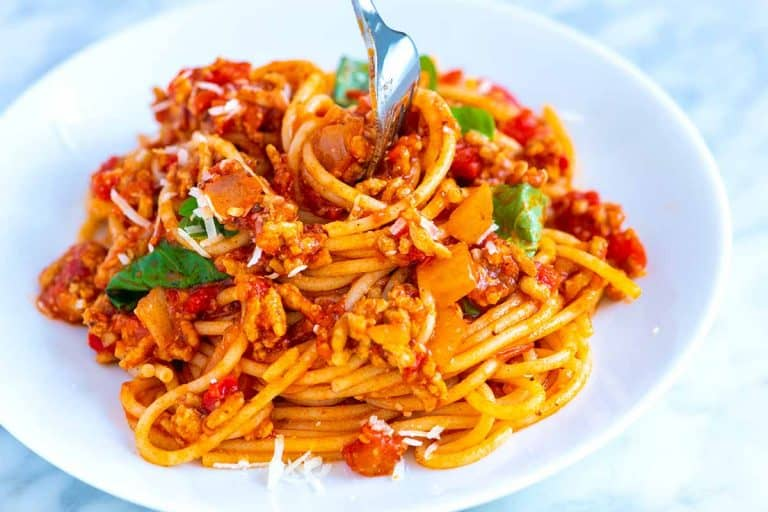

Spaghetti

This is a picture of spaghetti :P
Home
Ingredients:
- 1 pound dried spaghetti noodles (450g)
- 1 pound lean ground meat like ground beef, ground turkey, or bulk Italian sausage (450g)
- 3 tablespoons olive oil
- 1 cup chopped onion (130g)
- 3 garlic cloves, minced, 1 tablespoon
- 2 tablespoons tomato paste
- ½ teaspoon dried oregano
- Pinch crushed red pepper flakes
- 1 cup water, broth, or dry red wine (236ml)
- 1 (28oz) can crushed tomatoes
- Salt and fresh ground black pepper
- Handful of fresh basil leaves, plus more for serving
- Parmesan cheese, for serving
Steps:
- Heat the oil in a large pot over medium-high heat (we use a Dutch oven). Add the meat and cook until browned, about 8 minutes. Use a wooden spoon to break the meat into smaller crumbles as the meat cooks.
- Add the onions and cook, stirring every once in a while, until softened, about 5 minutes. Stir in the garlic, tomato paste, oregano, and red pepper flakes and cook, stirring continuously for about 1 minute.
- Pour in the water and use a wooden spoon to scrape up any bits of meat or onion stuck to the bottom of the pot. Stir in the tomatoes, ¾ teaspoon of salt, and a generous pinch of black pepper.
- Bring the sauce to a low simmer. Cook uncovered for 25 minutes. As it cooks, stir and taste the sauce a few times so you can adjust the seasoning accordingly (see notes for seasoning suggestions).
- About 15 minutes before the spaghetti sauce finishes cooking, bring a large pot of salted water to a boil. Then, cook the pasta according to the package directions, but check for doneness a minute or two before the suggested cooking time. Drain.
- Remove the sauce from the heat and stir in the basil. Toss in the cooked pasta and leave for a minute so that it absorbs some of the sauce. Toss again, and then serve with grated parmesan cheese on top.